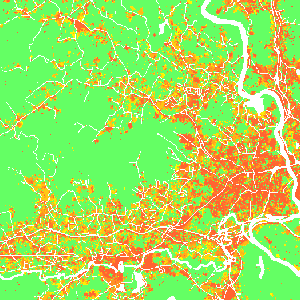

Urban Growth Models:
From cellular automata to growing patches
Anna Petrasova, Vaclav Petras, Helena Mitasova
GIS714 Geosimulations NCSU
Learning objectives
- evolution of urban growth models: from cellular automata to patch-based stochastic simulations
- FUTURES modeling framework
- demand and development potential
- calibration
- development pressure and patch growing algorithm
- creating scenarios
Urban growth models evolution
- computational foundation: Tobler's Detroit growth model (1970), Conway's Game of life (1970)
- rule-based cellular automata
- probabilistic land change models
- coupling with agent-based models
- inputs, calibration and validation: time series of RS and GIS data
For comprehensive overview see Li and Gong, 2016, Urban growth models: progress and perspective
Cellular automata principle
Space is tesselated into grid cells with initial state $C_{i,j}^{t=0}$
State of cell $(i,j)$ at time $t+\Delta t$ can be expressed as:
$$ C_{ij}^{t+\Delta t} = F(C_{ij}^{t}, O_{ij}^{t}, R) $$
where
- $C_{ij}^{t}$ is the cell state at time $t$,
- $O_{ij}^{t}$ is the state of cells in its neighborhood
- $R$ represents transition rules
- note that $\Delta t$ is small
Game of life
Developed by Conway in 1970, the game has
4 simple rules
The resulting pattern is dependent only on the initial configuration: example of emergence and self-organization leading to many surprising evolution patterns
Game of life in wikipedia: from simple still lifes and oscilators to complex, dynamic patterns, Evolution of many configurations on YouTube

Gosper glider by Kieff, CC BY-SA 3.0,
https://commons.wikimedia.org/w/index.php?curid=101736
Land change cellular automata
- georeferenced tesselation (grid)
- initial state is based on land use data, usually from RS or GIS
- rules are derived from socio-economic data and interactions between humans and environment
- models are calibrated and validated using time series of land use data
Tobler's Detroit growth model
Cellular automata model with the spread rate estimated from actual population growth data 1930-1960.
W. R. Tobler (1970) A Computer Movie Simulating Urban Growth in the Detroit Region,
Economic Geography, 46:sup1, 234-240, DOI: 10.2307/143141i
In this paper Tobler invoked his famous first law of geography:
"everything is related to everything else, but near things are more related than distant things."
SLEUTH urban growth model
- couples Urban Growth Model and Land Cover Deltatron Model
- SLEUTH is an acronym for inputs: Slope, Land Cover, Excluded, Urban, Transportation, Hillshade
- Urban areas behave like a living organism trained by transition rules:
- class to class transition matrix derived from 2 LU maps
- time series of 4 urban maps is used for calibration
- parameters derived from past growth: dispersion, breed, spread, slope resistance, road gravity
- growth types: diffusive, new spreading center, organic, road influenced
Learn more about SLEUTH at Project Gigalopolis
Probabilistic CA urban growth models
- Special case of land change models
- Probabilistic transition rules and a stochastic perturbation term
- Statistical methods are used to develop the transition rules, based on past time series:
logistic regression, neural networks, decision trees
- Beyond square grids: hexagons, irregular probabilistic patches
- Interactions and spread beyond the immediate neighborhood
FUTURES
FUTure Urban-Regional Environment Simulation, Meentemeyer et al., 2013
- urban growth model
- patch-based
- stochastic
- accounts for location, quantity, pattern of change
- positive feedbacks (new development attracts more development)
- allows spatial non-stationarity

Modeling components: urban growth
- Modeled quantity: year when a grid cell is developed
- Spatial and temporal scale: regional (county - country), years
- Configuration space and interactions: population growth, land demand, environment and infrastructure...
- Governing equations: statistical models, stochastic patch spread
FUTURES output
simulates where and when undeveloped cells (green) will turn into developed cells (shades of orange)
Numbers represent the year when the cell was developed since the start of simulation: -1: undeveloped, 0: initial development, 1: developed in the first year, …
Modeling framework

Demand submodel
- estimates the rate of per capita land consumption for each subregion
- extrapolates between historical changes in population and land conversion
- inputs are historical landuse, population data, population projection
- output is land area that needs to be developed each year to satisfy the demand driven by the population growth
Demand scenarios


$$ y = Ae^{BX} \\ y = A + Bx \\ y = A + B ln(x) \\ y = A + B ln(x - C) \\ y = (1 - e^{-A(x - B)}) + C $$
Demand: population decline
- demand submodel designed for regions with population growth
- FUTURES doesn't simulate cell de-conversion: here it would simulate zero new cell conversions
- even with population decline, impervious areas can increase
Modeling framework
Potential submodel
- development suitability is estimated using multilevel logistic regression which accounts for variation among subregions
- inputs are uncorrelated predictors e.g., distance to roads, distance from existing development, slope, ...

Example predictors: distance to lakes, development pressure dependent on distance from developed areas (orange: developed areas, green: undeveloped areas)
Development pressure
- Feedback between predicted change and change in subsequent steps
- Predictor based on number of neighboring developed cells within search distance, weighted by distance: gravity model
- $state_k$ indicates whether neighboring cell $k$ is 1 or 0 (developed or undeveloped)
- $d_{ik}$ is distance between cell $i$ and neighboring cell $k$
- $\gamma$ controls the influence of distance between neighboring cells
Development pressure
Surface represents the development pressure, color is the initial development
Development pressure 1992
Development pressure 2011
Potential submodel
Predicts development potential for each cell as a function of predictor variables using multilevel logistic regression $$ s_i = a_{j,i} + \sum_{h=1}^{n} \beta_{j, i, h} \, x_{i, h} $$- $j$ is the level
- $h$ is a predictor (e.g. development pressure, slope, ...)
- $n$ is the number of predictor variables
- $a_{j,i}$ is intercept
- $\beta_{j, i, h}$ is regression coefficient
- $x_{i, h}$ is the value of $h$ at cell $i$
To grow patches the development potential $s_i$ for cell $i$ is converted to development probability $p_i$ $$ p_i = \frac{e^{s_i}}{1 + e^{s_i}} $$
Potential submodel: workflow
- stratified random sampling of predictors and response variable (developed/undeveloped raster)
- multilevel logistic regression to relate cell suitability factors (predictors) to its development potential for each subregion
- use the regression coefficients to compute the development potential and development probability surface
Modeling framework
Patch Growing Algorithm
- stochastic algorithm
- converts land in discrete patches
- inputs are patch characteristics (distribution of patch sizes and compactness) derived from historical data

Historical urban development data: 1992
Historical urban development data 2001
Historical urban development data 2006
Historical urban development data 2011
Patch Growing Algorithm
- pick randomly a seed cell $i$
- seed is established if $p_i$ > random number
- randomly pick patch size
- grow patch
- add neighbors ($p_j$) to a list and sort it based on $p_j / d_{ij}^c$, where $d_{ij}$ is distance from $i$ and $c$ is compactness value
- pick first neighboring cell and try to add it to the patch if $p_j$ > random number
- if added, add surrounding neighboring cells to the list
- repeat until the patch size is met
- recompute development pressure
Patch Compactness


Scenarios: Incentive power
Transforms probability $p_i$ to $p_i^x$ to simulate infill vs. sprawl


Scenarios
Constraint parameter: zones with decreased probability of development $$P_{new} = P . C, \quad C \in \langle 0, 1\rangle $$Stimulus parameter: zones with increased probability of development $$P_{new} = P + S - P.S, \quad S \in \langle 0, 1 \rangle$$
r.futures
Information flow diagram for the set of FUTURES modules
Additionally, r.futures.parallelpga can be used instead of r.futures.pga.
Visualization
Rendering the futures output in 3D using development type typology